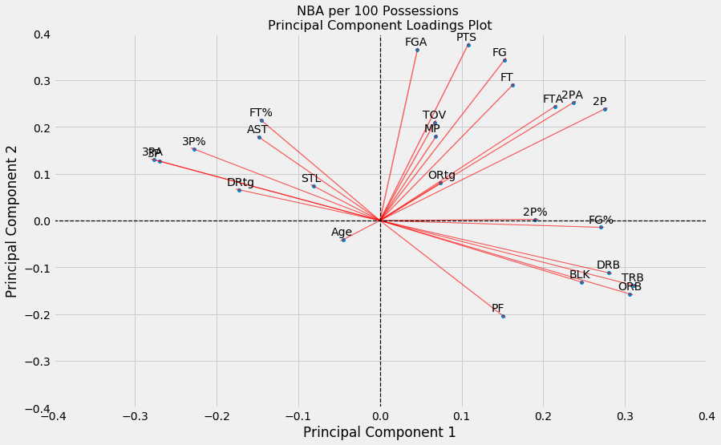
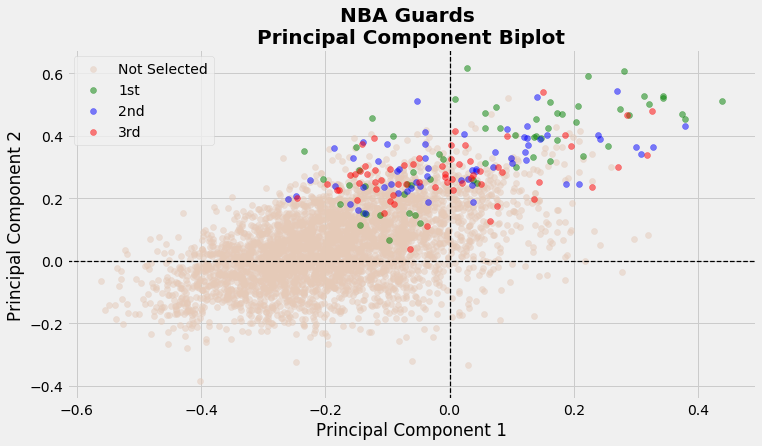
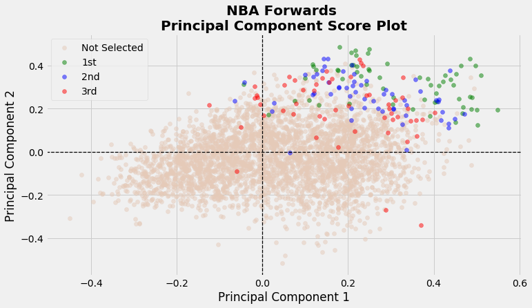
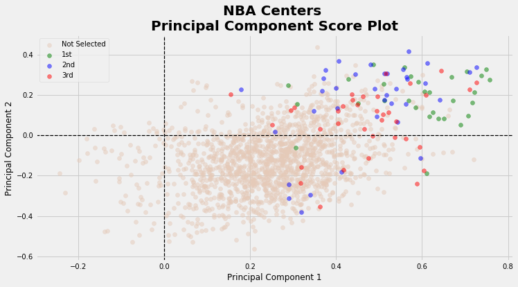
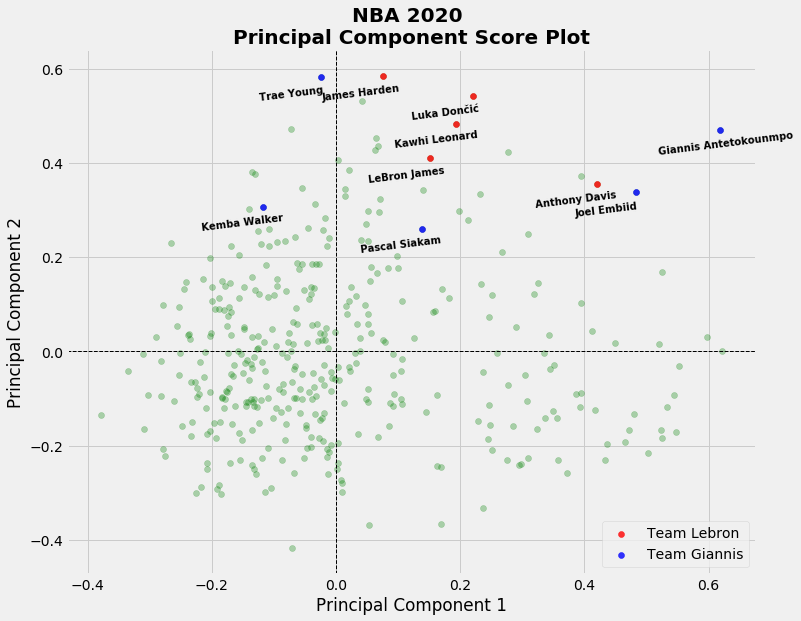
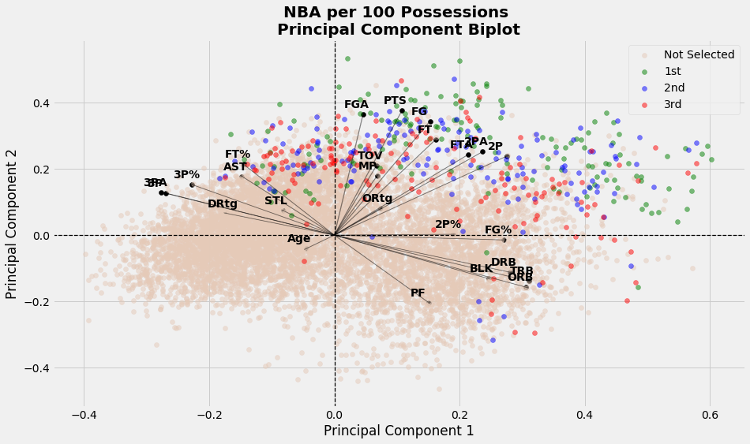
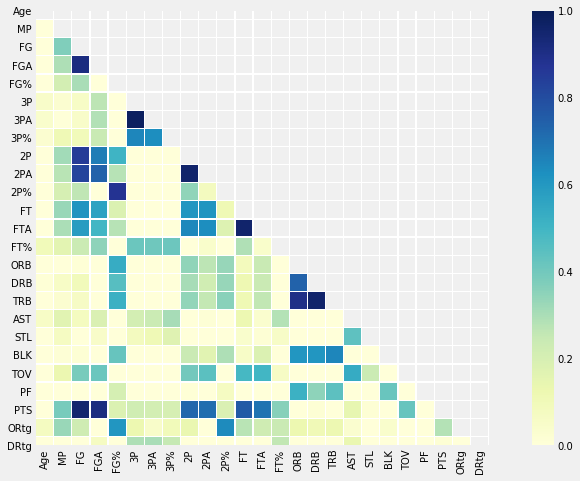

Principal Component Analysis on All-NBA
 Photo by Stephen Baker on Unsplash
Photo by Stephen Baker on Unsplash
All-NBA
The All-NBA award is an interesting way in which we can keep track of the best stars in the game. Since 1989, 15 players are voted on at the end of each season by reporters and members of the media, to occupy 3 prestigious All-NBA teams; 6 Guards, 6 Forwards and 3 Centers are placed up on the highest pedestals above their peers.
Outside of being named among the top 15 players, what are the other defining features of an All-NBA player? Is there anything that separates a player on the 1st All-NBA team from a player on the 2nd or 3rd All-NBA teams? Have there been any egregious snubs for this award in the past? To answer these pressing questions, we first turn to Principal Component Analysis for guidance on distinguishing general patterns among All-NBA players.
Table of contents
Principal Component Analysis
Among many potential capabilities, principal component analysis (PCA) can be used as a simple visualization tool when we have a myriad of continuous features to consider. In our case, we have several recognizable box score metrics like points scored, rebounds and assists that we’ll explore.
PCA is an unsupervised algorithm that is able to summarize a set of continuous variables into a lower-dimensional representation that is hopefully easier to visualize. In some sense, we are compressing the data into a compact form that captures most of the variability in the data. With PCA, we’ll investigate which combination of features best explain the variability of NBA player performances across different seasons.
Per 100 Possessions Data
While most box-score metrics are available at the end of each season on a per game basis (ex: Points per game), using a per game standard makes it challenging to compare performances of players under different team styles of basketball. For example, recently we’ve seen an emphasis on an up-tempo and spread out offence largely popularized by coach Mike D’Antoni. The modern NBA offence has seen an explosion in the volume of shots taken each game, especially beyond the arc. Pace of play is also much faster now than what it was even 10 years ago, which makes it exceedingly difficult to also compare players from different eras.
One standard that might allow a better comparison of players under different offence styles and eras is the per 100 possessions metric. This metric standardizes each player’s opportunity to fill the stat sheet, by exactly measuring how well players perform per 100 possessions rather than by per game. Here, players who stuff the stat sheet with fewer opportunities will now appear more favourable than players who conversely had more opportunities to fill the same stat sheet.
We obtain per 100 possessions data through Basketball Reference, with the help of the bball R package.
Data Preparation
Since the inception of 3 distinct All-NBA teams started in 1989, we begin collecting data from 1989 until the past 2019 season.
To remove as much noise and outliers as possible, we’ve decided to only include players that satisfy the following two conditions:
- Played in at least 10 games
- Averaged at least 15 minutes played per game
Applying the above two filters reduces the size of the data from 13760 to 8729 observations. Additionally, we chose to look at a total of 25 continuous features.
PCA Visualizations
After standardizing each feature to have a mean of 0 and standard deviation of 1, we then apply the PCA algorithm through the Scikit-learn library in Python. We will first focus on visualization across the first 2 principal components, as it is easier to represent data in 2 dimensions.
Each principal component is simply a normalized linear combination of the 25 features, found by maximizing a variance objective function. Subsequent principal components are found with the added constraint that they are orthogonal to the previous principal components. Loadings are the weights for each of the 25 features relative to a principal component.
Loadings Plot
With a PC Loadings plot of the first and second principal components, we can depict the directions in feature space along which the data vary the most. Each loadings vector shows the relative importance/weight that both principal components place on the 25 features.

From this loadings plot, we see that Principal Component 1 (PC1) places its highest weights on rebounds, blocks, and field goal percentages (i.e. highest loading values along the x-axis). Hence, players with high PC1 scores roughly correspond to players who can crash and bang in the paint to secure rebounds, alter shots and perhaps have nice efficiency in finishing buckets near the rim. Interestingly, features with highly negative weights along this principal component include 3 pointers made and attempted, steals and assists. These metrics seem to summarize traits among traditional Guards (i.e. perimeter players).
Similarly, we see that Principal Component 2 (PC2) places its highest weights on points, field goals, field goal attempts and free throws made (i.e. highest values along the y-axis). We shouldn’t be too surprised to see all four of these variables located closely to one another since they are all somewhat correlated. Eventually as players take more and more shots, this will increase the number of field goals made which in turn will increase the number of points scored for that player. Players with high PC2 scores might correspond to players vying for scoring titles.
PC Scores Plot
How do players, and more importantly All-NBA players, fit along this 2-D representation?
For each of the n=8729 observations, we plot the scores of the first principal component along the x-axis, and the scores of the second principal component along the y-axis.
Let’s first take a look at the scores for guards.

Here we see a clear distinction of players who make All-NBA compared to those who don’t. While the majority of guards tend to have negative scores along the PC1 axis, about half of the All-NBA guards have highly positive PC1 scores. This might indicate that having higher versatility, that is the ability to not only facilitate plays but also score and grab rebounds, might lead to an All-NBA player. Of course, we do see a sizeable amount of guards placed near the direction favouring steals and assists. This would indicate that having higher versatility is certainly not a prerequisite for a guard to be All-NBA. Surprisingly, there does not appear to be an obvious pattern of players on 1st team All-NBA compared to the 2nd and 3rd teams.

Moving onto Forwards, we see that most forwards seem to fit anywhere on this plot. However, majority Forwards who end up making All-NBA are found in the upper right quadrant with high PC1 and PC2 scores. In fact, it seems like having higher scores on both these axes is related to Forwards on the 1st All-NBA team. We see a bit more disparity of the 3 All-NBA teams on this plot.

Lastly for centers we see that they are placed mostly on the right side of this score plot. This is intuitive since most centers are not adept in steals, assists or 3 pointers. Furthermore, centers tend to grab more rebounds and block more shots, so it is not a surprise to see their scores be far along the right of the x-axis. Interestingly, many All-NBA centers have positive PC2 scores, especially centers who make the 1st All-NBA team (except for 2 occasions). This might indicate that centers who can not only peform a traditional center role, but also contribute offensively at an elite level tend to make the 1st All-NBA team.
How about the 2020 season?
How would players in the 2020 season fare on this PC plot? Here, we plot all scores of players in the 2020 NBA season. Since it is difficult to compactly label all these points, we chose to label only the starters in the 2020 All-Star Game.

Here we see some interesting points. Trae Young so clearly separates himself with an anomalously high PC2 score which complements his surreal performance in running the Hawks offence with a bevy of scoring and facilitating opportunities. On the complete other side of the spectrum, we see Giannis with a huge PC1 score which is a tribute to his dominant ability to grab boards, alter shots and score at will in the paint. Lastly, we note that Lebron is lagging a bit behind both Kawhi and Luka on both PC scores.
Scree Plot
So far, we’ve only considered a two-dimensional representation of the 25-dimensional data for simplicity. However, does 2 dimensions successfully capture the major patterns in the data? How much information is lost by projecting the observations onto only the first two principal components? That is, how much of the variance in the data is not contained in the first two principal components? To answer these important questions, we present a scree plot which depicts the proportion of variance explained by each of the principal components.

We see that the first principal component explains about 28% of the variance in the data, and the second principal component explains 24% of the variance. Together, the first two principal components explain almost 52% of the variance in the data; just over half of the entire variance. The third principal component accounts for under 10% of the variance, while the remaining principal components each slightly hover above or are below 5% of the total variance.
While the first two dimensions does miss out on a sizeable amount of variance, it does still provide an okay summary of the data. The convenience of plotting in only two dimensions is of course why we focussed merely on 2 principal components. The 3rd principal component explains less than half of either of the first two principal components, so it was not worthwhile to pursue an added layer of dimensionality with so little upside.
Closing Remarks
So, what have we learned from looking at these plots? Essentially, Forwards and Centers who get more rebounds, blocks, points and field goal makes are more likely to be All-NBA caliber players. Furthermore, extra versatility for guards might make them All-NBA bound, but guards that excel under a traditional guard role can still vie for the All-NBA. In other words, the Earth is round, rain is wet and Kawhi is still on load management. While we aren’t making new and deep impressions on the game of basketball it is still interesting to visualize specifically the tendencies of All-NBA players.
Appendix
Biplots combine both loading and score plots in a single display. They might be easier to analyse since everything is on a single plot, but I find them to be a bit clunky especially with many features plotted. 
To visualize relationships between continuous features, it might be appealing to look at pairwise correlation plots. The issue though is that with many continuous features included, these plots can get overloaded and difficult to visualize. In this project we only had 25 features to consider, which isn’t too bad.
